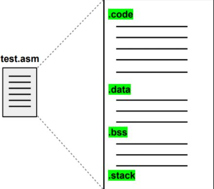

Normalmente, é comum que ao criar um programa no computador ele seja descrito em uma linguagem de alto nível, como, por exemplo, a linguagem C. Esse programa, com o suporte de um compilador, é traduzido para uma linguagem de baixo nível, como o Assembly. Após isso, com o auxílio de um montador, ele é finalmente descrito para a linguagem do computador, em Bytecodes. No entanto, esse código ainda não está executável e dependendo do sistema operacional ou se o programa precisar fazer o uso de algumas bibliotecas, ainda será necessário o uso de outra ferramenta, o Linker. Ele faz alterações no programa, em Bytecode, para que ele possa utilizar bibliotecas que podem ser necessárias dependendo do sistema operacional da máquina, e outra função seria ajustar o endereçamento do programa e por fim gerar o executável.
(Alguns compiladores realizam todas essas etapas)
O simulador também possui uma interface gráfica que permite configurar os componesnte da plataforma Mandacaru, programar uma aplicação para execução no processador conceitual, configurar, executar e visualizar a simulação e analizar a performance do sistema. A interface será mais explorada na aba Interface Gráfica.
A estrutura do código Assembly segue as seguinte divisões: